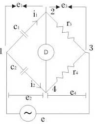

Wheatstone bridge circuit is an important concept in studying electrical and electronics measurement. Wheatstone bridge is the fundamental bridge whose concept is used in making other bridges. These bridges have four arms with different elements like resistances, inductance or capacitance. Wheatstone bridge measures an unknown resistance in one arm with balancing the resistances on the opposite arms. An equation is used for bridge equation which helps in finding out the unknown element value. De Sauty’s bridge is a modified version of Wheatstone bridge used in measuring an unknown capacitance. The unknown capacitance is measured in terms of a standard capacitance whose value is given and also two resistances are present in the other two arms of the bridge. Capacitances are provided with internal resistances.

This is a simplified circuit diagram of the De Sauty’s bridge. Let us define each of the notations in the diagram.
C1 is the capacitance to be measured,
C2 is the standard value capacitance,
r3 and r4 non inductive resistances,
e is the supply voltage.
Point 2 and 4 are at same potential under balance condition. By the equation we get the unknown capacitance as,
C1 = C2 × (r4 / r3)
Bridge has maximum sensitivity when two capacitance values are equal that is C1 = C2. Perfect balance is obtained only when capacitors are free from dielectric loss. For this reason we can use air capacitors.
 by
by